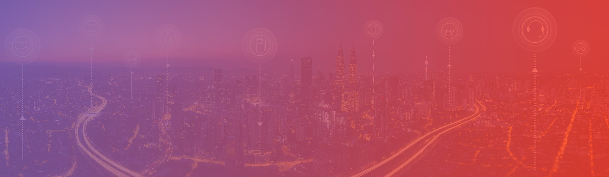

Home
Formação Acadêmica
Experiência Profissional
Formação Acadêmica:
Ensino Médio - Colégio de Aplicação PIO XII Campinas. Formado em 2014.
Técnico em Instrumentação(Automação Industrial)- SENAI – Prof. Dr. Euryclides de Jesus Zerbini. 2014- 2015.
Ensino Superior Incompleto(Trancado no início do quarto ano) - PUC Campinas: Engenharia de Telecomunicações. 2015 - 2018.
Desenvolvedor Front-End - Alura. Em andamento
Formação complementar:
Competência Transversal em Empreendedorismo – SENAI
Competência Transversal em Legislação Trabalhista – SENAI
Competência Transversal em Tecnologia da Informação e Comunicação-SENAI.